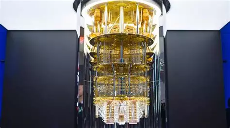

Nous somme au coeur de l’avenir de l’informatique et même de la technologie. L’informatique quantique utilise des
phénomènes issus de la mécanique quantique, une branche de la physique. Ce domaine n’a été émise que très
récemment avec des théories datant du XXeme siècle par Max Planck, un physicien allemand. L’informatique quantique n’a
été entendu que dans les années 70 avec le physicien Richard Phillips Feynman (ce projet ne vera jamais le jour). Depuis
les années 90, la recherche sur les calculs quantiques pour un ordinateur ne fait qu'accélérer et surtout depuis les
années 2010.Cependant, nous somme encore loin de produire des machines aussi développées que maintenant.
Pour faire simple, le quantique est un monde de l'infiniment petit où les particules (électrons, atomes, ions, photons,...)
peuvent exiter dans plusieurs états simultanément et à plusieurs endroits.
C'est ce qui fait que la conception de l'informatique quantique est totalement différente ce qu'on connait déja. Ainsi, les
objets sont calculés un par un dans un ordinateur quantique.
Actuellement seul les grandes entreprises comme IBM ou amazon travaille sur cette technologie. Cependant, il existerait quelques
exemplaires chez certaines personnes dans le monde comme la NASA ou la CIA...Nous retrouvons deja la technologie du quantique dans la médecine avec la résonance magnétique utilisé pour diagnostiquer les
cancers.

Le premier ordinateur quantique fonctionnel par IBM
Le bit et le qubit: quelles sont les différences ?
Un bit classique que nous connaissons tous fonctionne de manière binaire. Il est soit dans l'état 1, soit dans l'état 0. Faisant que la possibilité de valeurs et de 2n.
Alors qu'un qubit va prendre n'importe quelle états à la fois augmentant drastiquement le nombre de valeurs possible.
Ainsi, si nous résonnont en plusieurs bits ou qubits, la différence est énorme !
Par exemple, si nous prenons une octets soit 8 bits classiques, il peut y avoir 256 valeurs possibles. Mais 8 qubits pouvants prendre comme états n'importe quelle superposition des 256 valeurs possible en bit
classique, nous mène à plusieurs millions de milliards d'états possibles et donc beaucoups plus de valeurs. C'est pour cela que l'ordinateur quantique est surpuissant...